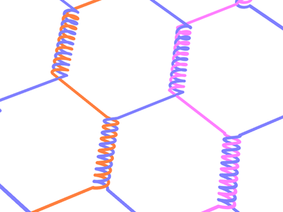
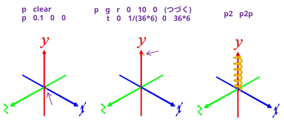
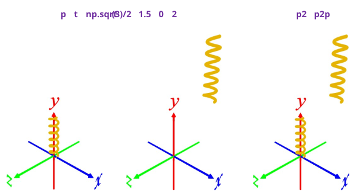
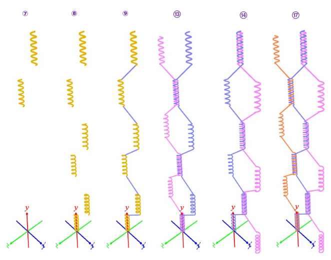

① p clear ･･･ Points[ ]を空にする
② p 0.1 0 0 ･･･ 3D 座標 (0.1,0,0)を追加
③ p g r 0 10 0 t 0 1/(36*6) 0 36*6 ･･･ y 軸周りに10°回転を 6周。6周で y方向に+1 (螺旋形に押し出し)
④ p2 p2p ･･･ P2[ ] の内容(螺旋状の点列)を Points[ ] に移動

⑤ p t np.sqrt(3)/2 1.5 0 2 ･･･ 亀甲(六角形)になるように螺旋を複製
⑥ p2 p2p ･･･ 複製前と後の螺旋を Points[ ] に移動

⑦ p t 0 3 0 3 ･･･ y方向 +3 に複製を2個作成
⑧ p2 p2p ･･･ 複製前と後の螺旋を Points[ ] に移動
⑨ polyline ･･･ メッシュ化(パイプ化)
⑩ save kanaami_basic.ply ･･･ メッシュをセーブ
⑪ l kanaami_basic.ply ･･･ 2 個目をロード
⑫ c 255 128 255 ･･･ 2 個目をピンクにする
⑬ r 0 180 0 ･･･ 2 個目を裏返す
⑭ t np.sqrt(3) 0 0 ･･･ 2 個目を画面上右に移動
⑮ l kanaami_basic.ply ･･･ 3 個目をロード
⑯ c 255 128 64 ･･･ 3 個目をオレンジにする
⑰ r 0 180 0 ･･･ 3個目を裏返す

CG だと物体をすり抜けられるので、お気楽に螺旋を作って、ひっくり返して重ねて作ったが、実際はこんな感じで作るらしい･･･
亀甲金網ができるまで【奥谷金網製作所】